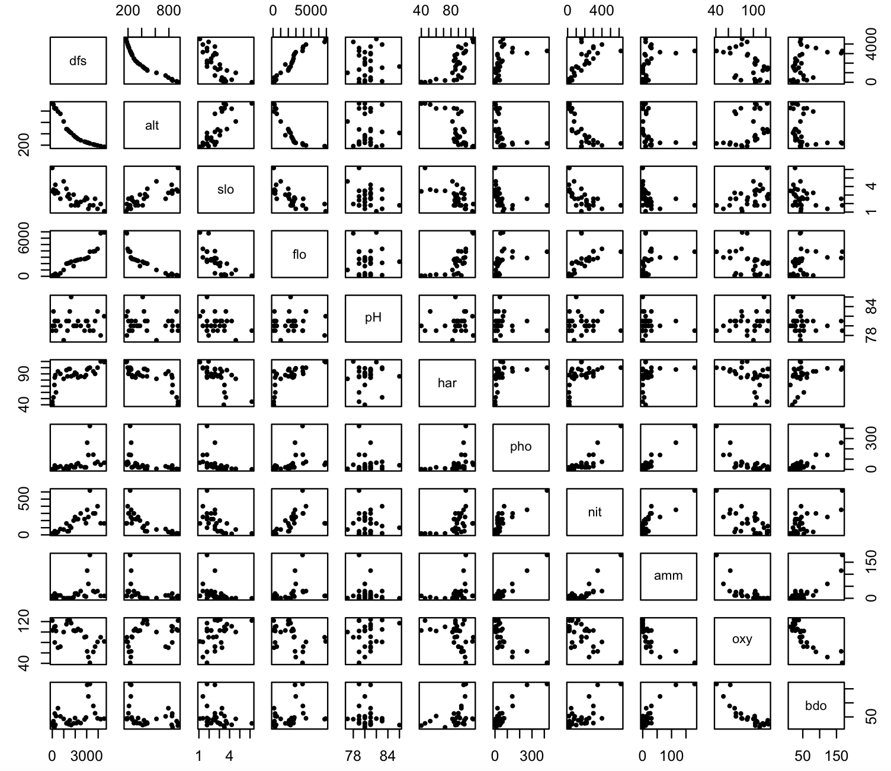
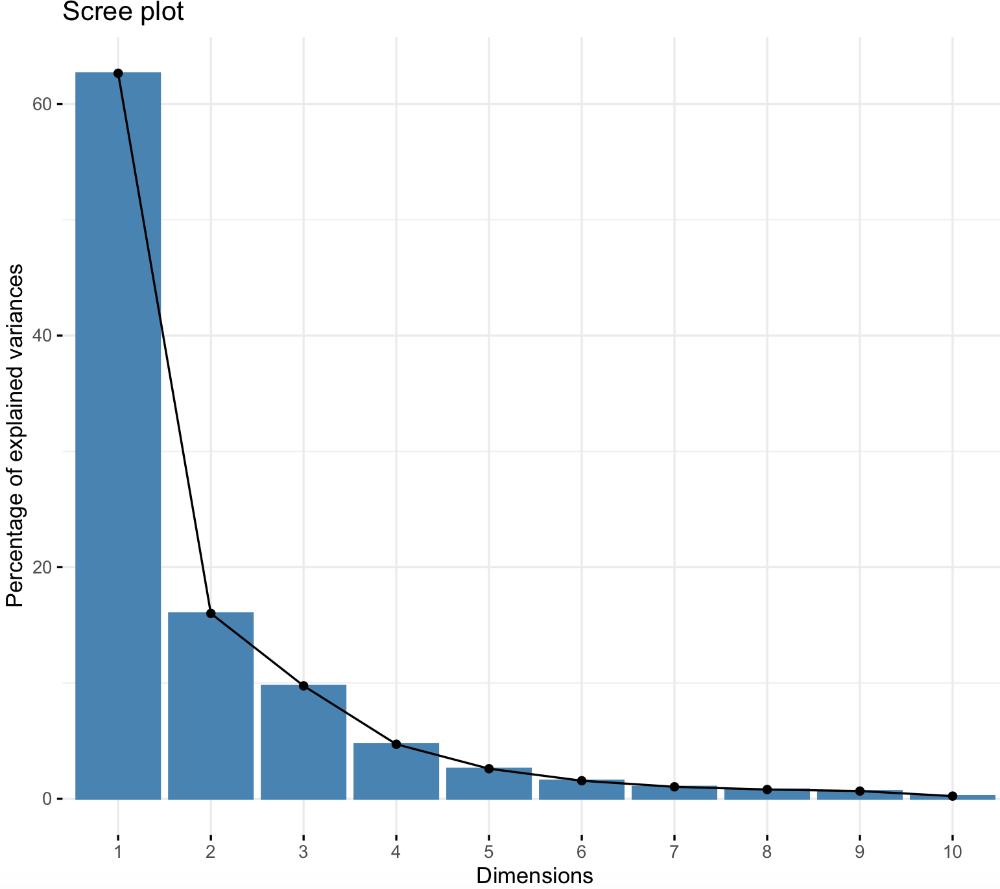
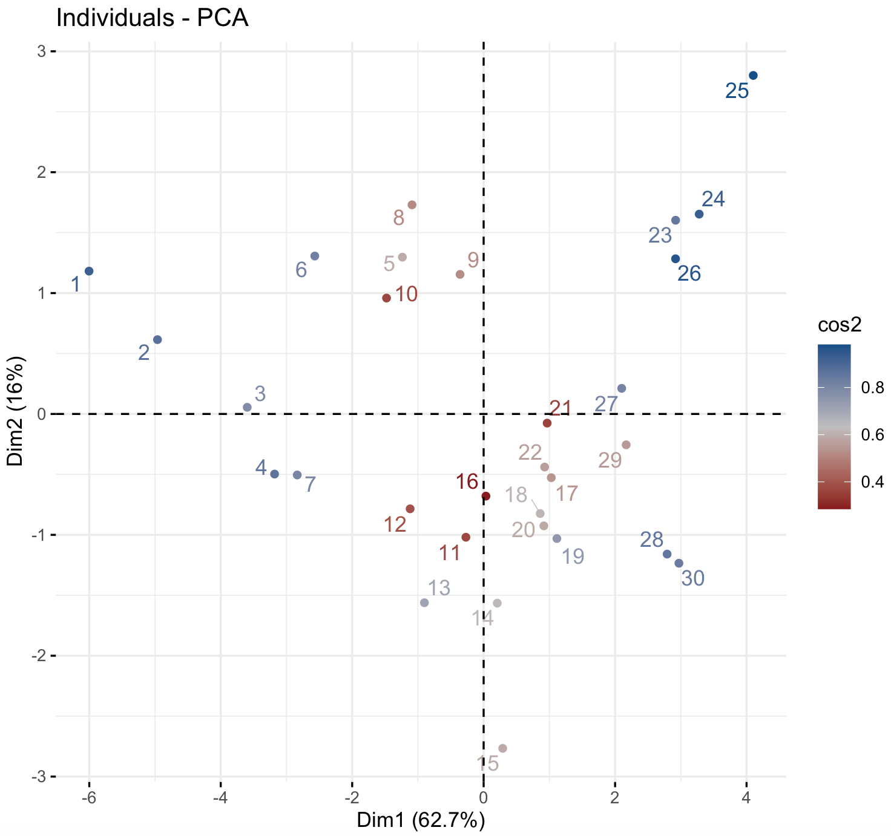
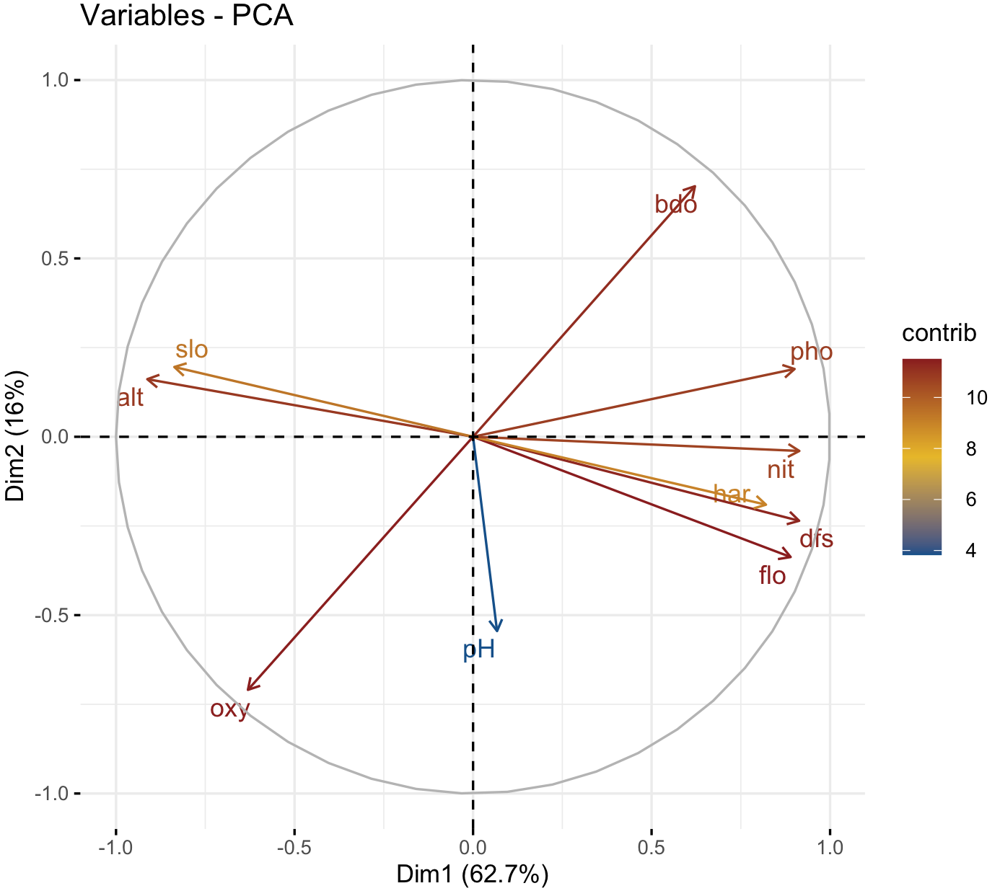
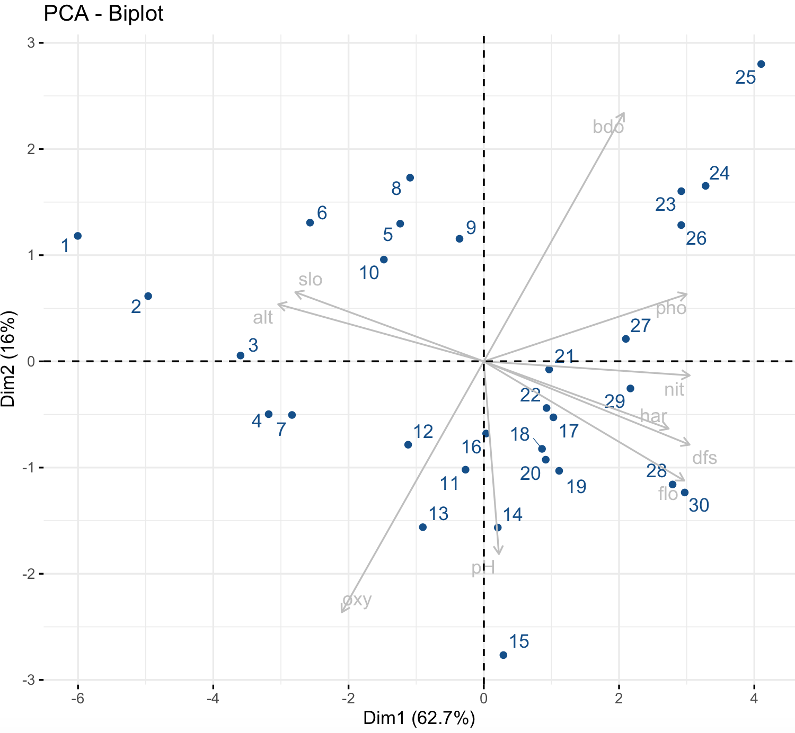
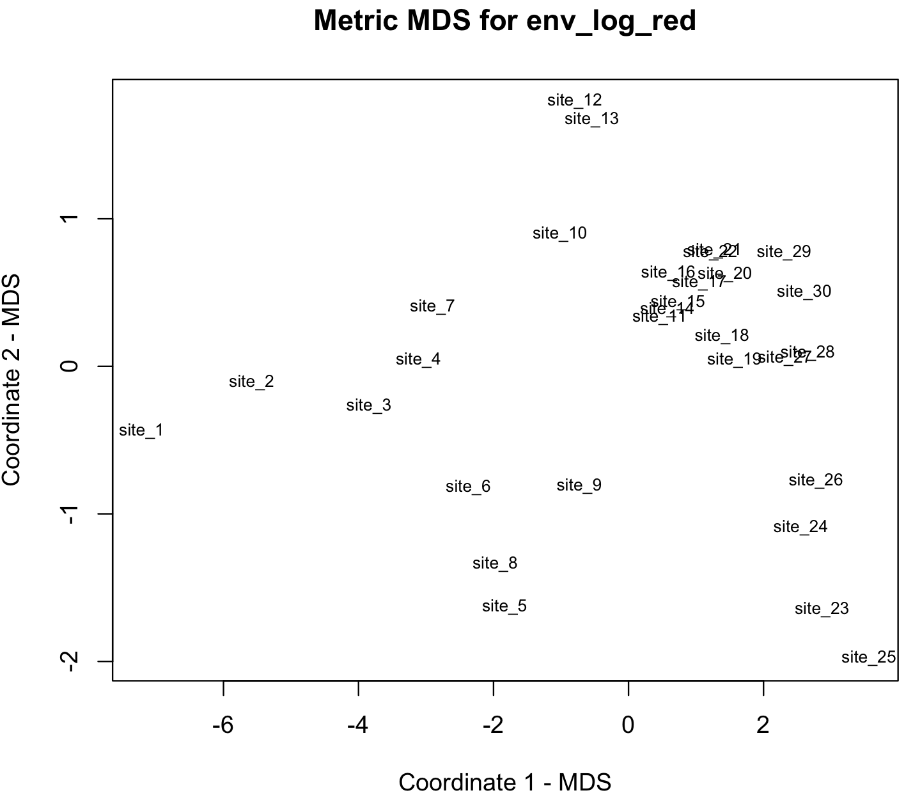
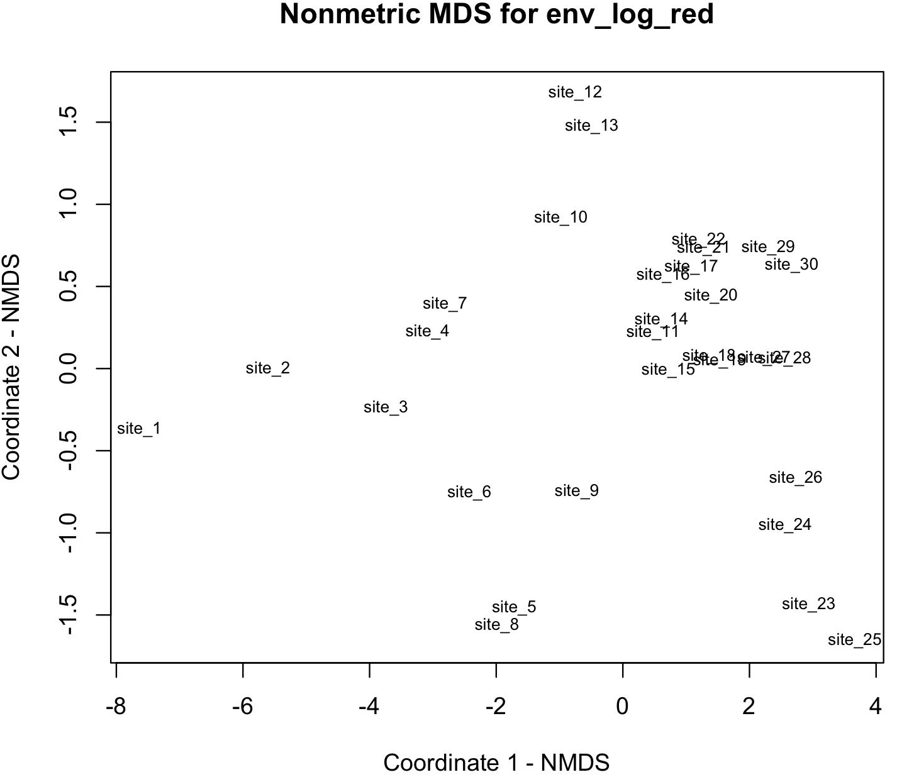
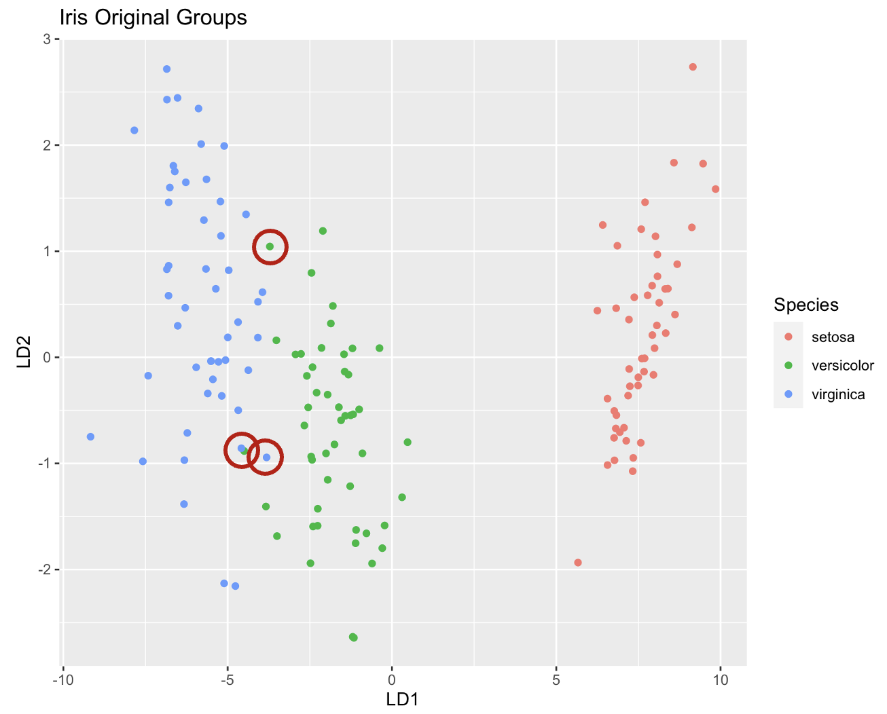
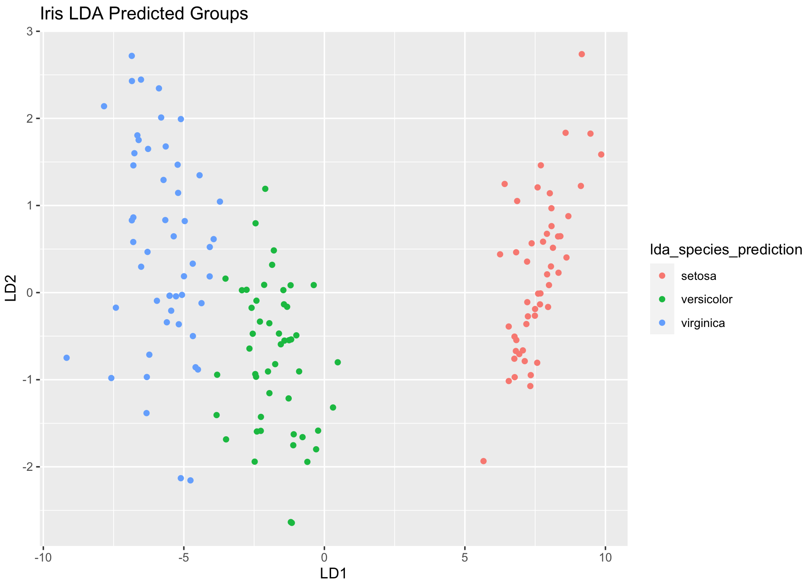
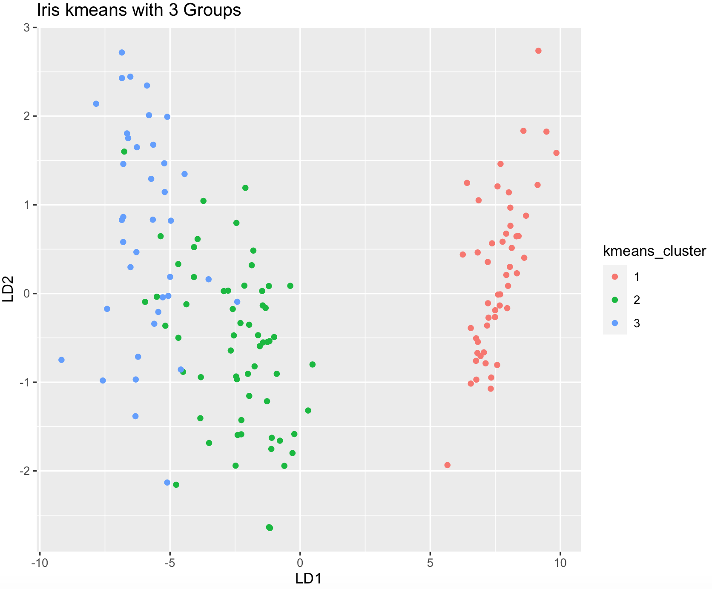

Session 8 – Multidimensional Data in R
Many datasets derive from multiple variables measured from hundreds of individuals and many of such parameters are obtained simultaneously (i.e., multidimensional) and together are often difficult to interpret. Most researchers aim to reduce such complexity, identify groups of interest or increase data interpretability using diverse methods like principal component analysis (PCA), multidimensional scaling (MDS), cluster analyses among others. We will explore some of these methods.
8.1 Principal Component Analysis
PCA is a common approach to reduce dimensionality in a dataset. For instance, PCA reduce the data complexity from many variables into few summary components, while preserving much of the statistical information. During the analysis, new variables (named components) are found that are linear functions of those in the original dataset, that successively maximize variance and that are uncorrelated with each other, see Jolliffe and Cadima 2016.
PCA is recommended when you have large dataset of variables (e.g., > 8) and many individuals (>20 or better in the hundreds) with measurements of such variables. For this example, we will use the env data frame of the doubs dataset from the R-package ade4. The env is a data frame with 30 rows (sites) and 11 environmental variables.
## we can install ade4 and load the dataset for this example
install.packages("ade4")
library(ade4)
##load the doubs dataset into the R environment
data(doubs)
env_raw <- doubs$env
head(env_raw)
# dfs alt slo flo pH har pho nit amm oxy bdo
#1 3 934 6.176 84 79 45 1 20 0 122 27
#2 22 932 3.434 100 80 40 2 20 10 103 19
#3 102 914 3.638 180 83 52 5 22 5 105 35
#4 185 854 3.497 253 80 72 10 21 0 110 13
#5 215 849 3.178 264 81 84 38 52 20 80 62
#6 324 846 3.497 286 79 60 20 15 0 102 53We can start by getting a pairwise bivariate plots of these 11 variables.
## we can install ade4 and load the dataset for this example
pairs(env_raw, pch = 19, cex=0.5)
We notice a relative variability in these pairwise plots. Some show a linear relationship, others do not. Likewise, some scales differences are evident (some are in the hundreds, others much less).
## we can use the function modify() form the R-package **purrr** to standardize this dataset using log
library(purrr)
env_log <- purrr::modify(env_raw, log)
head(env_log)
# dfs alt slo flo pH har pho nit amm oxy bdo
#1 1.098612 6.839476 1.820671 4.430817 4.369448 3.806662 0.0000000 2.995732 -Inf 4.804021 3.295837
#2 3.091042 6.837333 1.233726 4.605170 4.382027 3.688879 0.6931472 2.995732 2.302585 4.634729 2.944439
#3 4.624973 6.817831 1.291434 5.192957 4.418841 3.951244 1.6094379 3.091042 1.609438 4.653960 3.555348
#4 5.220356 6.749931 1.251905 5.533389 4.382027 4.276666 2.3025851 3.044522 -Inf 4.700480 2.564949
#5 5.370638 6.744059 1.156252 5.575949 4.394449 4.430817 3.6375862 3.951244 2.995732 4.382027 4.127134
#6 5.780744 6.740519 1.251905 5.655992 4.369448 4.094345 2.9957323 2.708050 -Inf 4.624973 3.970292
## Notice some -Inf value, we will remove that column 9 that corresponds to ‘amm’
env_log_red <- env_log[,-9]
head(env_log_red)
# dfs alt slo flo pH har pho nit oxy bdo
#1 1.098612 6.839476 1.820671 4.430817 4.369448 3.806662 0.0000000 2.995732 4.804021 3.295837
#2 3.091042 6.837333 1.233726 4.605170 4.382027 3.688879 0.6931472 2.995732 4.634729 2.944439
#3 4.624973 6.817831 1.291434 5.192957 4.418841 3.951244 1.6094379 3.091042 4.653960 3.555348
#4 5.220356 6.749931 1.251905 5.533389 4.382027 4.276666 2.3025851 3.044522 4.700480 2.564949
#5 5.370638 6.744059 1.156252 5.575949 4.394449 4.430817 3.6375862 3.951244 4.382027 4.127134
#6 5.780744 6.740519 1.251905 5.655992 4.369448 4.094345 2.9957323 2.708050 4.624973 3.970292
## we can install ade4 and load the modified dataset for this example
pairs(env_log_red, pch = 19, cex=0.5)We can run PCA using the preloaded function in R or with several specialized packages. We will start with the functions prcomp() and summary().
## apply PCA - scale. = TRUE is highly advisable, but default is FALSE.
env_prcomp <- prcomp(env_log_red, center = TRUE, scale. = TRUE)
env_prcomp
#Standard deviations (1, .., p=10):
# [1] 2.5031260 1.2651443 0.9875811 0.6860815 0.5095091 0.3946341 0.3212448 0.2824013 0.2580574 0.1512203
#
#Rotation (n x k) = (10 x 10):
# PC1 PC2 PC3 PC4 PC5 PC6 PC7 PC8 PC9 PC10
#dfs 0.36486258 -0.18617302 0.1482270 -0.27425018 0.070856291 -0.06822936 0.375972370 0.04774989 -0.73277048 0.211581601
#alt -0.36451449 0.12764399 -0.1690422 -0.36872511 0.165563399 0.30103670 0.159545574 0.45954368 -0.16927250 -0.550436218
#slo -0.33426066 0.15461463 0.2062596 -0.41599181 -0.694152941 0.08059586 -0.008314283 -0.38539136 -0.10748520 0.016710642
#flo 0.35536702 -0.26645120 0.2469480 0.07962110 -0.140470255 -0.21095156 0.148040510 -0.22735329 0.11111159 -0.764991160
#pH 0.02686455 -0.43046956 -0.8301590 -0.07333534 -0.270021833 -0.14147519 -0.099820286 -0.07667608 -0.09705901 -0.035234427
#har 0.32775459 -0.15043755 0.1025784 -0.71869778 0.192865111 -0.02065425 -0.450542106 0.06200716 0.30538254 0.071982806
#pho 0.35978479 0.15025127 -0.2384279 -0.09780973 0.004998182 0.59283974 0.493290882 -0.25929815 0.33522306 0.084468872
#nit 0.36509191 -0.03139547 0.1053406 0.23840435 -0.511528294 0.41078684 -0.313263865 0.51006660 -0.09509725 -0.006021563
#oxy -0.25192228 -0.56073462 0.2173434 -0.06473107 -0.174757541 -0.08405657 0.438140938 0.36832297 0.39110186 0.229102408
#bdo 0.24827761 0.55517993 -0.1762335 -0.13016095 -0.252295130 -0.55318468 0.254587830 0.33694829 0.18286003 0.026082994
## see its structure
#str(env_prcomp)
#List of 5
# $ sdev : num [1:10] 2.503 1.265 0.988 0.686 0.51 ...
#$ rotation: num [1:10, 1:10] 0.3649 -0.3645 -0.3343 0.3554 0.0269 ...
# ..- attr(*, "dimnames")=List of 2
# .. ..$ : chr [1:10] "dfs" "alt" "slo" "flo" ...
# .. ..$ : chr [1:10] "PC1" "PC2" "PC3" "PC4" ...
#$ center : Named num [1:10] 6.887 6.019 0.943 7.153 4.388 ...
# ..- attr(*, "names")= chr [1:10] "dfs" "alt" "slo" "flo" ...
#$ scale : Named num [1:10] 1.6786 0.5747 0.3863 1.3041 0.0214 ...
# ..- attr(*, "names")= chr [1:10] "dfs" "alt" "slo" "flo" ...
#$ x : num [1:30, 1:10] -6 -4.96 -3.6 -3.18 -1.24 ...
# ..- attr(*, "dimnames")=List of 2
# .. ..$ : chr [1:30] "1" "2" "3" "4" ...
# .. ..$ : chr [1:10] "PC1" "PC2" "PC3" "PC4" ...
# - attr(*, "class")= chr "prcomp"
## we can get a summary
summary(env_prcomp)
#Importance of components:
# PC1 PC2 PC3 PC4 PC5 PC6 PC7 PC8 PC9 PC10
#Standard deviation 2.5031 1.2651 0.98758 0.68608 0.50951 0.39463 0.32124 0.28240 0.25806 0.15122
#Proportion of Variance 0.6266 0.1601 0.09753 0.04707 0.02596 0.01557 0.01032 0.00798 0.00666 0.00229
#Cumulative Proportion 0.6266 0.7866 0.88415 0.93123 0.95719 0.97276 0.98308 0.99105 0.99771 1.00000The output of env_prcomp includes the standard deviation of each of the 10 principal components (PCs). You should expect as many PCs as variables in your dataset. The values under Rotation (n x k) are the rotation (or loadings) of each of variables in the original dataset that have been maximize its relevance on each components. The higher the absolute value of the loading, the more that variable loads (i.e., is better represented) on each specific PC.
Thesummary(env_prcomp) output describe the importance of each PC. The proportion of variance indicates the proportion of the total variance in the data explained by each PC. We can notice the values of the second row are progressively added resulting in a cumulative proportion of explained variance. In most cases, the first PC accounts for more most of the variance explain (i.e., 62.66%). If we consider the two firsts PCs, then the total variance explained by these 2 PCs is 78.66%. The rest of PCs are progressively less and less relevant to explain the variance of the data.
For most purposes, the first two PCs are used for plots and visualizing dimensionality reduction. However, we can determine how many PCs to retain using a scree plot and other references using the R-package factoextra.
We can get an scree plot with the function fviz_eig().
## install package, if not present. It also requires the R-package ggplot2.
install.packages("factoextra")
install.packages("ggplot2")
library(factoextra)
#Loading required package: ggplot2
#Welcome! Want to learn more? See two factoextra-related books at https://goo.gl/ve3WBa
factoextra::fviz_eig(env_prcomp)
This scree plot shows the eigenvalues that provide information on the percentage of variances explained by each PC and support our intuition that the first two PCs are the most useful to summarize the variability of our dataset. For instance, we see a marked drop in the percentage of explained after PC2, and we can ignore those PCs (3-10) that explain relatively little variation. Thus, we should focus primarily on PC1 and PC2.
We can graph our samples (i.e., individuals on our dataset) with their PC1 and PC2 coordinates using the function fviz_pca_ind().
factoextra::fviz_pca_ind(env_prcomp,
col.ind = "cos2",
gradient.cols = c("firebrick4", "gray", "dodgerblue4"),
repel = TRUE)
Individuals with a similar profile tend to group together and color cos2 refers to the quality of representation. Notice that you can choose the color gradient that you want with the argument gradient.cols, it might need 3 colors.
### NOTE: Sometimes you get this error.
#Error in UseMethod("depth") :
# no applicable method for 'depth' applied to an object of class "NULL"
### Try to resubmit the fviz_pca_ind() after closing the graph window.We can also graph of variables that we used in our PCA using the function fviz_pca_var().
factoextra::fviz_pca_var(env_prcomp,
col.var = "contrib",
gradient.cols = c("dodgerblue4", "#E7B800", "firebrick4"),
repel = TRUE)
We can see that positive correlated variables point to the same side of the plot, while negative correlated variables point to opposite sides of the graph. Notice that you can choose the color gradient that you want with the argument gradient.cols, it might need 3 colors.
### NOTE: Sometimes you get this error.
#Error in UseMethod("depth") :
# no applicable method for 'depth' applied to an object of class "NULL"
### Try to resubmit the fviz_pca_ind() after closing the graph window.We can also graph plot both individuals and variables at the same time using the function fviz_pca_biplot().
factoextra::fviz_pca_biplot(env_prcomp,
col.var = "gray", # Variables color
col.ind = "dodgerblue4", # Individuals color
repel = TRUE)
We can extract other metrics of our PCA with several functions of factoextra.
The eigenvalues can be printed with the function get_eigenvalue()describe the importance of each PC. Similar to summary(env_prcomp).
## Eigenvalues
eig_val_env_prcomp <- factoextra::get_eigenvalue(env_prcomp)
eig_val_env_prcomp
# eigenvalue variance.percent cumulative.variance.percent
#Dim.1 6.26563999 62.6563999 62.65640
#Dim.2 1.60059015 16.0059015 78.66230
#Dim.3 0.97531642 9.7531642 88.41547
#Dim.4 0.47070789 4.7070789 93.12254
#Dim.5 0.25959955 2.5959955 95.71854
#Dim.6 0.15573609 1.5573609 97.27590
#Dim.7 0.10319822 1.0319822 98.30788
#Dim.8 0.07975052 0.7975052 99.10539
#Dim.9 0.06659361 0.6659361 99.77132
#Dim.10 0.02286757 0.2286757 100.00000The variable results can be printed with the function get_pca_var().
## Results for Variables
res_var_env_prcomp <- factoextra::get_pca_var(env_prcomp)
# Coordinates
res_var_env_prcomp$coord
# Contributions to the PCs
res_var_env_prcomp$contrib
# Quality of representation
res_var_env_prcomp$cos2 The individual (i.e., samples) associated results can be printed with the function get_pca_ind().
## Results for individuals
res_ind_env_prcomp <- factoextra::get_pca_ind(env_prcomp)
# Coordinates -- this is same as env_prcomp$x
res_ind_env_prcomp$coord
# Contributions to the PCs
res_ind_env_prcomp$contrib
# Quality of representation
res_ind_env_prcomp$cos2 8.2 Multidimensional scaling
We use multidimensional scaling helps to visualize similarities of individual cases or samples of a dataset. In this analysis, we reduce dimensions to be able to visualize or represent data points in a more friendly manner. We start with a set of samples or individuals measured on several numeric variables. After the analysis, we get a representation of the distances among these samples or individuals in a lower dimensional space (e.g., 2 dimensions), so we can infer the relative relationship (distance) between them. In other words, individuals or samples that are closer are more similar.
We will use our example `env_log_red, but we need to add names to the sites for visualization.
## We can name our samples by assigned a unique row name.
env_log_red_MDS <- env_log_red
rownames(env_log_red_MDS) <- paste0("site_", 1:nrow(env_log_red_MDS))
head(env_log_red_MDS)
# dfs alt slo flo pH har pho nit oxy bdo
#site_1 1.098612 6.839476 1.820671 4.430817 4.369448 3.806662 0.0000000 2.995732 4.804021 3.295837
#site_2 3.091042 6.837333 1.233726 4.605170 4.382027 3.688879 0.6931472 2.995732 4.634729 2.944439
#site_3 4.624973 6.817831 1.291434 5.192957 4.418841 3.951244 1.6094379 3.091042 4.653960 3.555348
#site_4 5.220356 6.749931 1.251905 5.533389 4.382027 4.276666 2.3025851 3.044522 4.700480 2.564949
#site_5 5.370638 6.744059 1.156252 5.575949 4.394449 4.430817 3.6375862 3.951244 4.382027 4.127134
#site_6 5.780744 6.740519 1.251905 5.655992 4.369448 4.094345 2.9957323 2.708050 4.624973 3.970292We can perform MDS using the function dis() and cmdscale()for metric or classical MDS with two dimensions k = 2.
## Classical MDS: N rows (objects) x p columns (variables)
# get Euclidean distances between the rows
env_log_red_MDS_d <- dist(env_log_red_MDS)
# k is the number of dimensions
env_log_red_MDS_fit <- cmdscale(env_log_red_MDS_d,eig=TRUE, k=2)
str(env_log_red_MDS_fit)
#List of 5
# $ points: num [1:30, 1:2] -7.21 -5.58 -3.84 -3.11 -1.83 ...
# ..- attr(*, "dimnames")=List of 2
# .. ..$ : chr [1:30] "site_1" "site_2" "site_3" "site_4" ...
# .. ..$ : NULL
#$ eig : num [1:30] 203.13 25.14 9.43 4.54 3.22 ...
#$ x : NULL
#$ ac : num 0
#$ GOF : num [1:2] 0.92 0.92We can plot this samples using the x-y coordinates in env_log_red_MDS_fit$points.
## plot solution
x <- env_log_red_MDS_fit$points[,1]
y <- env_log_red_MDS_fit$points[,2]
plot(x, y, xlab= "Coordinate 1 - MDS", ylab="Coordinate 2 - MDS", main="Metric MDS for env_log_red", type="n")
text(x, y, labels = row.names(env_log_red_MDS), cex=.7) 
We use nonmetric multidimensional scaling to visualizing the function isoMDS() of the R-package MASS.
## For nonmetric MDS, we load MASS (we installed this package before)
library(MASS)
env_log_red_MDS_d <- dist(env_log_red_MDS)
env_log_red_NMDS <- MASS::isoMDS(env_log_red_MDS_d, k=2)
str(env_log_red_NMDS)
#List of 2
# $ points: num [1:30, 1:2] -7.64 -5.6 -3.74 -3.08 -1.72 ...
# ..- attr(*, "dimnames")=List of 2
# .. ..$ : chr [1:30] "site_1" "site_2" "site_3" "site_4" ...
# .. ..$ : NULL
# $ stress: num 2.49
## plot solution NMDS solution
x <- env_log_red_NMDS$points[,1]
y <- env_log_red_NMDS$points[,2]
plot(x, y, xlab= "Coordinate 1 - NMDS", ylab="Coordinate 2 - NMDS", main="Nonmetric MDS for env_log_red", type="n")
text(x, y, labels = row.names(env_log_red_MDS), cex=.7) 
8.3 Cluster analysis: DFA
Many biological datasets might have an underlying structure were groups or clusters that can be outcome of a treatment. Finding those set of objects that are more similar might help to identify groups or clusters that can used to classification of other samples.
We use a classic example known as the Fisher’s or Anderson’s Iris data set, which is a dataset of multiple measurements introduced by Ronald Fisher to illustrate taxonomic problems as an example of linear discriminant analysis. This dataset consists of 50 samples of three species of flowers: Iris setosa, Iris virginica and Iris versicolor. The dataset includes four features of the flower measured in centimeters. This dataset can be loaded from the R-package datasets.
install.packages("datasets")
library(datasets)
data(iris)
iris_dataset <- iris
summary(iris_dataset)
# Sepal.Length Sepal.Width Petal.Length Petal.Width Species
#Min. :4.300 Min. :2.000 Min. :1.000 Min. :0.100 setosa :50
#1st Qu.:5.100 1st Qu.:2.800 1st Qu.:1.600 1st Qu.:0.300 versicolor:50
#Median :5.800 Median :3.000 Median :4.350 Median :1.300 virginica :50
#Mean :5.843 Mean :3.057 Mean :3.758 Mean :1.199
#3rd Qu.:6.400 3rd Qu.:3.300 3rd Qu.:5.100 3rd Qu.:1.800
#Max. :7.900 Max. :4.400 Max. :6.900 Max. :2.500
head(iris_dataset)
# Sepal.Length Sepal.Width Petal.Length Petal.Width Species
#1 5.1 3.5 1.4 0.2 setosa
#2 4.9 3.0 1.4 0.2 setosa
#3 4.7 3.2 1.3 0.2 setosa
#4 4.6 3.1 1.5 0.2 setosa
#5 5.0 3.6 1.4 0.2 setosa
#6 5.4 3.9 1.7 0.4 setosaWe can perform discriminant function analysis (DFA) or Linear Discriminant Analysis (LDA) to find a function (e.g., linear classifier) to separate samples in to two or more classes. For this analysis, we will the function lda() from the package MASS.
## we have used the packages MASS and ggplot2.
library(MASS)
library(ggplot2)
## we get the names of predictors (i.e., measurements) and target group
str(iris_dataset)
#'data.frame': 150 obs. of 5 variables:
#$ Sepal.Length: num 5.1 4.9 4.7 4.6 5 5.4 4.6 5 4.4 4.9 ...
#$ Sepal.Width : num 3.5 3 3.2 3.1 3.6 3.9 3.4 3.4 2.9 3.1 ...
#$ Petal.Length: num 1.4 1.4 1.3 1.5 1.4 1.7 1.4 1.5 1.4 1.5 ...
#$ Petal.Width : num 0.2 0.2 0.2 0.2 0.2 0.4 0.3 0.2 0.2 0.1 ...
#$ Species : Factor w/ 3 levels "setosa","versicolor",..: 1 1 1 1 1 1 1 1 1 1 ...We see that the grouping variable is Species with the three species and four continuous measurements associated with each individual in the dataset. In this case, we input a formula Species ~ Sepal.Length + Sepal.Width + Petal.Length + Petal.Width.
## we fit the lda function
iris_lda_model <- lda(formula = Species ~ Sepal.Length + Sepal.Width + Petal.Length + Petal.Width, data = iris_dataset)
iris_lda_model
#Call:
#lda(Species ~ Sepal.Length + Sepal.Width + Petal.Length + Petal.Width,
# data = iris_dataset)
#
#Prior probabilities of groups:
# setosa versicolor virginica
# 0.3333333 0.3333333 0.3333333
#
#Group means:
# Sepal.Length Sepal.Width Petal.Length Petal.Width
#setosa 5.006 3.428 1.462 0.246
#versicolor 5.936 2.770 4.260 1.326
#virginica 6.588 2.974 5.552 2.026
#
#Coefficients of linear discriminants:
# LD1 LD2
#Sepal.Length 0.8293776 0.02410215
#Sepal.Width 1.5344731 2.16452123
#Petal.Length -2.2012117 -0.93192121
#Petal.Width -2.8104603 2.83918785
#
#Proportion of trace:
# LD1 LD2
#0.9912 0.0088 We can now evaluate how good LDA can discriminate our dataset. We need to install two R-packages caret and e1071.
## we install these packages
install.packages("caret")
install.packages("e1071")
library(caret)
library(e1071)We need to fit predictive model over our data using the function train() and obtain the confusion matrix confusionMatrix() that is table that determines how good was the classification using LDA.
iris_lda_predict <- caret::train(Species ~ Sepal.Length + Sepal.Width + Petal.Length + Petal.Width, method = "lda", data = iris_dataset)
iris_lda_predict
#Linear Discriminant Analysis
#
#150 samples
# 4 predictor
# 3 classes: 'setosa', 'versicolor', 'virginica'
#
#No pre-processing
#Resampling: Bootstrapped (25 reps)
#Summary of sample sizes: 150, 150, 150, 150, 150, 150, ...
#Resampling results:
#
# Accuracy Kappa
# 0.9697408 0.9542207
iris_lda_confusion_matrix <- confusionMatrix(iris_dataset$Species, predict(iris_lda_predict, iris_dataset))
iris_lda_confusion_matrix
#Confusion Matrix and Statistics
#
# Reference
#Prediction setosa versicolor virginica
# setosa 50 0 0
# versicolor 0 48 2
# virginica 0 1 49
#
#Overall Statistics
#
# Accuracy : 0.98
# 95% CI : (0.9427, 0.9959)
# No Information Rate : 0.34
# P-Value [Acc > NIR] : < 2.2e-16
#
# Kappa : 0.97
#
# Mcnemar's Test P-Value : NA
#
#Statistics by Class:
#
# Class: setosa Class: versicolor Class: virginica
#Sensitivity 1.0000 0.9796 0.9608
#Specificity 1.0000 0.9802 0.9899
#Pos Pred Value 1.0000 0.9600 0.9800
#Neg Pred Value 1.0000 0.9900 0.9800
#Prevalence 0.3333 0.3267 0.3400
#Detection Rate 0.3333 0.3200 0.3267
#Detection Prevalence 0.3333 0.3333 0.3333
#Balanced Accuracy 1.0000 0.9799 0.9753We can see the confusion matrix and values that not consider between Reference and Prediction are discrepancies between what we assigned and what LDA determined as a part of a group. We can add such predictions to the iris_dataset using the function predict().
iris_lda_predicton <- predict (iris_lda_predict, iris_dataset)
iris_dataset$lda_species_prediction <- iris_lda_predicton
iris_dataset
# Sepal.Length Sepal.Width Petal.Length Petal.Width Species lda_species_prediction
#1 5.1 3.5 1.4 0.2 setosa setosa
#2 4.9 3.0 1.4 0.2 setosa setosa
#3 4.7 3.2 1.3 0.2 setosa setosa
#...
#69 6.2 2.2 4.5 1.5 versicolor versicolor
#70 5.6 2.5 3.9 1.1 versicolor versicolor
#71 5.9 3.2 4.8 1.8 versicolor virginica
#72 6.1 2.8 4.0 1.3 versicolor versicolor
#...
#83 5.8 2.7 3.9 1.2 versicolor versicolor
#84 6.0 2.7 5.1 1.6 versicolor virginica
#85 5.4 3.0 4.5 1.5 versicolor versicolor
#...
#132 7.9 3.8 6.4 2.0 virginica virginica
#133 6.4 2.8 5.6 2.2 virginica virginica
#134 6.3 2.8 5.1 1.5 virginica versicolor
#...You can see above that discrepancies in the classification assigned using LDA, these discrepancies should agree with the confusion table.
## we can add the LD coordinates
iris_dataset <- cbind(iris_dataset, predict(iris_lda_model)$x)
head(iris_dataset)
# Sepal.Length Sepal.Width Petal.Length Petal.Width Species lda_species_prediction LD1 LD2
#1 5.1 3.5 1.4 0.2 setosa setosa 8.061800 0.3004206
#2 4.9 3.0 1.4 0.2 setosa setosa 7.128688 -0.7866604
#3 4.7 3.2 1.3 0.2 setosa setosa 7.489828 -0.2653845
#4 4.6 3.1 1.5 0.2 setosa setosa 6.813201 -0.6706311
#5 5.0 3.6 1.4 0.2 setosa setosa 8.132309 0.5144625
#6 5.4 3.9 1.7 0.4 setosa setosa 7.701947 1.4617210
## we subset the iris_dataset to the original classification
iris_dataset_original <- subset(iris_dataset, select = c(Species, LD1,LD2))
head(iris_dataset_original)
# Species LD1 LD2
#1 setosa 8.061800 0.3004206
#2 setosa 7.128688 -0.7866604
#3 setosa 7.489828 -0.2653845
#4 setosa 6.813201 -0.6706311
#5 setosa 8.132309 0.5144625
#6 setosa 7.701947 1.4617210
## show original groups
ggplot(iris_dataset, aes(LD1, LD2)) +
geom_point(aes(color = Species)) +
ggtitle("Iris Original Groups")
## show LDA predicted groups
ggplot(iris_dataset, aes(LD1, LD2)) +
geom_point(aes(color = lda_species_prediction)) +
ggtitle("Iris LDA Predicted Groups")NOTE sometimes the ggplot() might need to run twice without closing the plot window to produce a correct plot


Can you find the changes on the classification between original and LDA predicted?
8.4 Cluster analysis: k-means (unsupervised)
We can use our own data without defining groups and ask if an algorithm used to find homogeneous subgroups in our data. One of such approaches is k-means clustering and we can use the preloaded function kmeans().
We will use the iris_dataset and assume that there are 3 groups (as we know about such dataset and its three putative species).
## Let's check again this dataset
iris_dataset <- iris
head(iris_dataset)
# Sepal.Length Sepal.Width Petal.Length Petal.Width Species
#1 5.1 3.5 1.4 0.2 setosa
#2 4.9 3.0 1.4 0.2 setosa
#3 4.7 3.2 1.3 0.2 setosa
#4 4.6 3.1 1.5 0.2 setosa
#5 5.0 3.6 1.4 0.2 setosa
#6 5.4 3.9 1.7 0.4 setosa
## We need to remove the column with species assignments
iris_dataset_num <- iris_dataset[,-which(names(iris_dataset) %in% c("Species"))]
head(iris_dataset_num)
# Sepal.Length Sepal.Width Petal.Length Petal.Width
#1 5.1 3.5 1.4 0.2
#2 4.9 3.0 1.4 0.2
#3 4.7 3.2 1.3 0.2
#4 4.6 3.1 1.5 0.2
#5 5.0 3.6 1.4 0.2
#6 5.4 3.9 1.7 0.4Notice how I removed the “Species” column, this is one of many forms to remove columns by name. Now we determine the 3 groups with centers = 3 by repeating 30 times using the argument nstart = 30 with the function kmeans().
iris_dataset_kmeans <- kmeans(iris_dataset_num, centers = 3, nstart = 30)
#K-means clustering with 3 clusters of sizes 50, 62, 38
#
#Cluster means:
# Sepal.Length Sepal.Width Petal.Length Petal.Width
#1 5.006000 3.428000 1.462000 0.246000
#2 5.901613 2.748387 4.393548 1.433871
#3 6.850000 3.073684 5.742105 2.071053
#
#Clustering vector:
# [1] 1 1 1 1 1 1 1 1 1 1 1 1 1 1 1 1 1 1 1 1 1 1 1 1 1 1 1 1 1 1 1 1 1 1 1 1 1 1 1 1 1 1 1 1 1 1 1 1 1 1 2 2 3 2 2 2 2 2 2 2 2 2 2 2 2 2 2 2 2
# [70] 2 2 2 2 2 2 2 2 3 2 2 2 2 2 2 2 2 2 2 2 2 2 2 2 2 2 2 2 2 2 2 3 2 3 3 3 3 2 3 3 3 3 3 3 2 2 3 3 3 3 2 3 2 3 2 3 3 2 2 3 3 3 3 3 2 3 3 3 3
#[139] 2 3 3 3 2 3 3 3 2 3 3 2
#
#Within cluster sum of squares by cluster:
#[1] 15.15100 39.82097 23.87947
# (between_SS / total_SS = 88.4 %)
#
#Available components:
#
#[1] "cluster" "centers" "totss" "withinss" "tot.withinss" "betweenss" "size" "iter" "ifault" We can add this kmean groups and compare those with the original species names.
## add the cluster vector to iris_dataset
iris_dataset_kmeans$cluster
# [1] 1 1 1 1 1 1 1 1 1 1 1 1 1 1 1 1 1 1 1 1 1 1 1 1 1 1 1 1 1 1 1 1 1 1 1 1 1 1 1 1 1 1 1 1 1 1 1 1 1 1 2 2 3 2 2 2 2 2 2 2 2 2 2 2 2 2 2 2 2
# [70] 2 2 2 2 2 2 2 2 3 2 2 2 2 2 2 2 2 2 2 2 2 2 2 2 2 2 2 2 2 2 2 3 2 3 3 3 3 2 3 3 3 3 3 3 2 2 3 3 3 3 2 3 2 3 2 3 3 2 2 3 3 3 3 3 2 3 3 3 3
#[139] 2 3 3 3 2 3 3 3 2 3 3 2
iris_dataset_original$kmeans_cluster <- factor(iris_dataset_kmeans$cluster)
head(iris_dataset_original)
# Species LD1 LD2 kmeans_cluster
#1 setosa 8.061800 0.3004206 1
#2 setosa 7.128688 -0.7866604 1
#3 setosa 7.489828 -0.2653845 1
#4 setosa 6.813201 -0.6706311 1
#5 setosa 8.132309 0.5144625 1
#6 setosa 7.701947 1.4617210 1
## we can plot these groups using the lda coordinates to visualize.
ggplot(iris_dataset_original, aes(LD1, LD2)) +
geom_point(aes(color = kmeans_cluster)) +
ggtitle("Iris kmeans with 3 Groups")